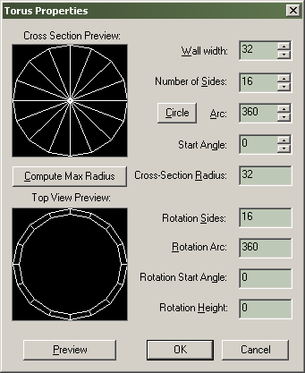
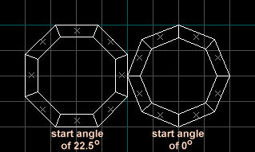

Dialogs: Torus Properties
The Torus primitive allows you to make complicated curved shapes, such as pipes, simply and quickly. The graphic preview gives an approximation of how the final arch will look with the settings chosen.

Preview
This button will redraw the graphic preview of the arch using the current settings.
Wall width
This is the width of the individual pieces of the arch. You can extend the arch walls outward by using a negative value here.
Number of sides
You can enter a value here between 3 and 100.
Arc
This is the number of degrees the arch will span. You can enter a value here that is between 8 and 360.
Circle
This button sets the Arc field to 360, which will generate a circular arch.
Start Angle
This lets you adjust the angle of the arch pieces, by setting the degree that the first piece is created:

Arch Tool start angle parameter
Cross-Section Radius
Description needed.
Rotation Sides
Description needed.
Rotation Arc
Description needed.
Rotation Start Angle
Description needed.
Rotation Height
Description needed.
Related Topics
Reorient primitives on creation in the active 2D view
© 2004 Valve Corporation. All rights reserved. Valve, the Valve logo, Half-Life, the Half-Life logo, the Lambda logo, Steam, the Steam logo, Team Fortress, the Team Fortress logo, Opposing Force, Day of Defeat, the Day of Defeat logo, Counter-Strike, the Counter-Strike logo, Source, the Source logo, Hammer and Counter-Strike: Condition Zero are trademarks and/or registered trademarks of Valve Corporation. Microsoft and Visual Studio are trademarks and/or registered trademarks of Microsoft Corporation. All other trademarks are property of their respective owners.